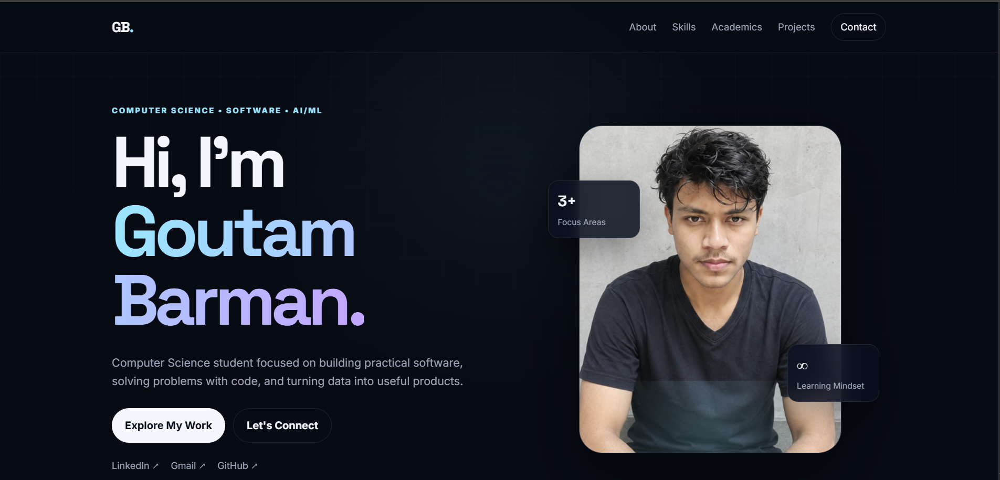
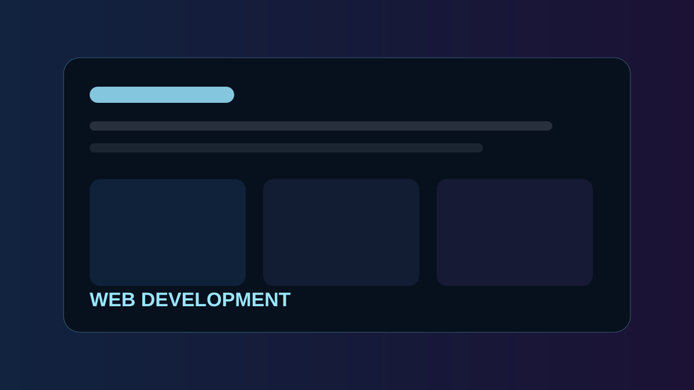
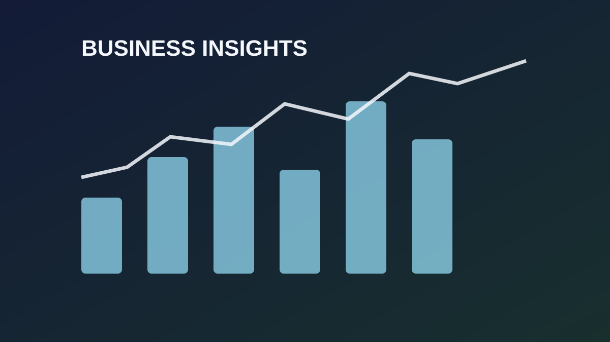
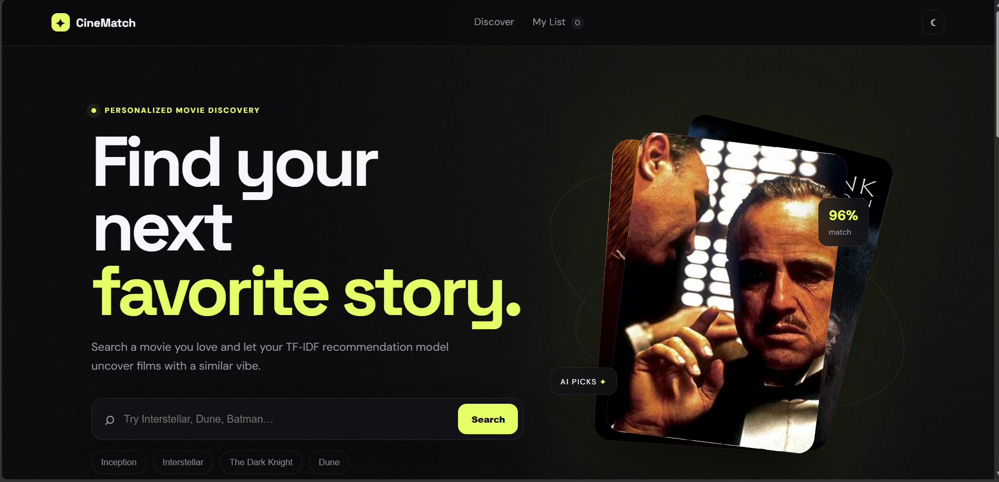

Languages
JavaPythonJavaScriptHTMLCSSSQL
COMPUTER SCIENCE • SOFTWARE • AI/ML
Computer Science student focused on building practical software, solving problems with code, and turning data into useful products.
ABOUT
I’m a Computer Science student interested in software development, problem solving, data, and machine learning. I enjoy understanding how systems work and then turning that understanding into practical applications.
My current learning path combines programming fundamentals with backend development, APIs, data analytics, and machine learning projects. I value clean implementation, teamwork, and learning through hands-on projects.
Breaking complex problems into smaller, testable steps.
Building useful applications with modern development tools.
Improving machine learning fundamentals.
Improving technical and communication skills through practice.
SKILLS
ACADEMICS
Siliguri institute of technology
Coursework and hands-on learning across programming, data structures, operating systems, machine learning fundamental, databases, computer networks, and software development.
Matigara hasasundar high school
WBBHSE(west bengal board of higher secondary education), science, 2023.
PROJECTS

WEBA responsive portfolio experience for presenting skills, academics, and project work with clear navigation and mobile-first design.

WEBA responsive hotel booking website, and project work with clear navigation and mobile-first design.

ANALYTICSInteractive dashboard concept that transforms raw business records into KPIs, trends, comparisons, and decision-ready summaries.

MLContent-based movie recommendation system using TF-IDF and similarity to suggest movies based on user-selected titles.
These project entries include editable sample text where your exact project details or links were not provided yet. Replace the marked placeholders with your real college, email, LinkedIn, GitHub, project URLs, and photos.
CONTACT
Open to internships, software development opportunities, collaborative projects, and learning-focused technical work.